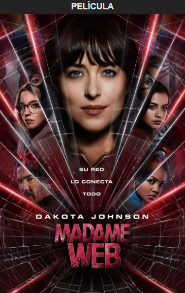

Sinopsis
Cassandra Webb es una paramédica en Manhattan que podría tener habilidades clarividentes. Obligada a enfrentarse a sucesos que se han revelado de su pasado, crea una relación con tres jóvenes destinadas a tener un futuro poderoso... si consiguen sobrevivir a un presente mortal.